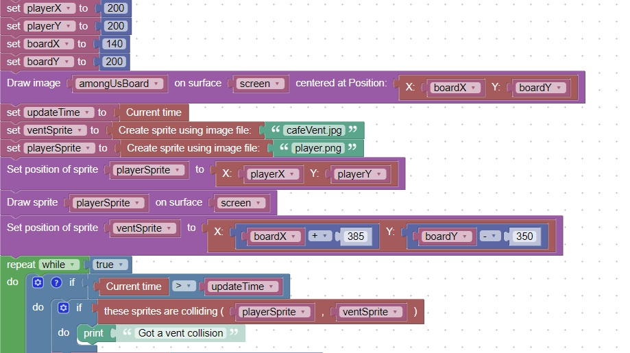

<h1>Sprite Collisions</h1>
You can detect a collision between 2 sprites<br>
This code will check for a collision between the player image and a sprite located on the board<br>
<br>

<hr>
<center></center>